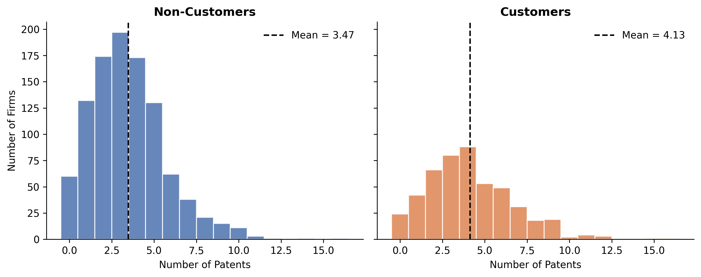
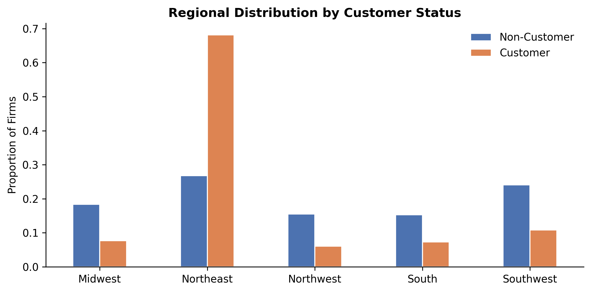
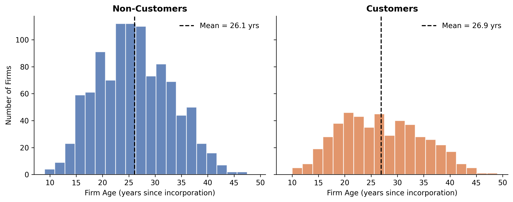
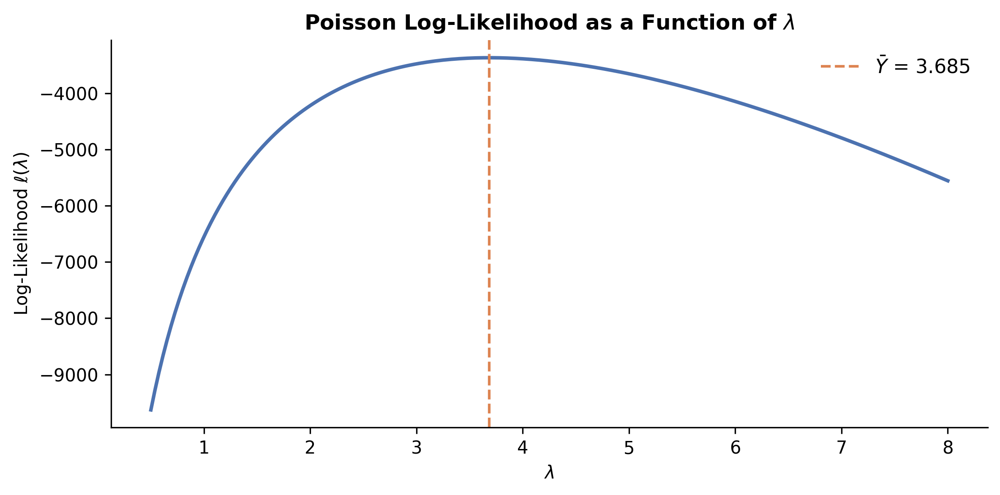
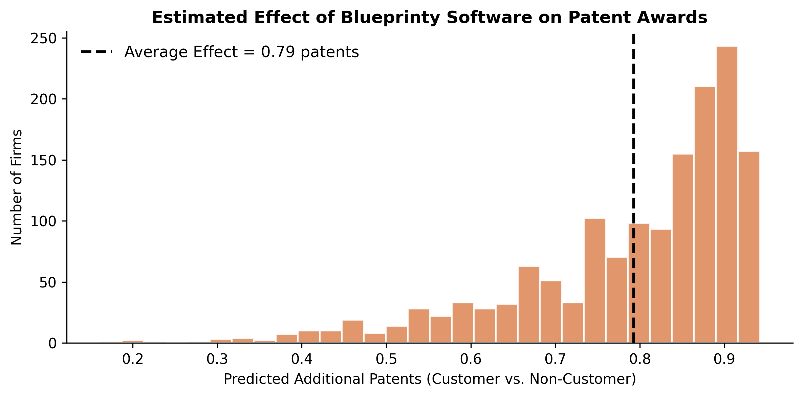

Does Better Software Mean More Patents? A Poisson Regression Case Study
Poisson Regression
MLE
Marketing Analytics
Causal Inference
I build a Poisson regression model from scratch using Maximum Likelihood Estimation to investigate whether Blueprinty’s patent-application software actually helps engineering firms win more patents.
Introduction
Blueprinty is a small software company that builds tools specifically designed for developing blueprints to submit patent applications to the US Patent and Trademark Office. Their marketing team wants to make a bold claim: firms that use Blueprinty’s software get more patents approved.
It’s an appealing story — but is it true?
The gold standard for evaluating such a claim would be a randomized experiment: take a group of firms, randomly assign half to use Blueprinty and half to continue without it, then compare patent outcomes. Alternatively, we’d want panel data showing each firm’s success rate before and after adopting the software. Unfortunately, neither dataset exists.
What Blueprinty has collected is a cross-sectional dataset of 1,500 mature (non-startup) engineering firms, recording each firm’s number of patents awarded over the last 5 years, geographic region, age since incorporation, and whether or not the firm is a Blueprinty customer.
The challenge is subtle but important: Blueprinty’s customers are not a random sample of all engineering firms. Firms that choose to purchase patent-development software may already be more patent-active, better-resourced, or located in innovation hubs. Any raw difference in patent counts between customers and non-customers could reflect these pre-existing characteristics rather than any causal effect of the software itself.
In this post, I’ll build a Poisson regression model from scratch via Maximum Likelihood Estimation to carefully examine this question — controlling for observable differences between the two groups.
Exploring the Data
The dataset contains 1,500 firms. Let’s start by comparing patent counts between Blueprinty customers and non-customers.
Patent Counts by Customer Status
| Mean | Median | Std Dev | N | |
|---|---|---|---|---|
| Non-Customer | 3.47 | 3.0 | 2.23 | 1019 |
| Customer | 4.13 | 4.0 | 2.55 | 481 |
Blueprinty customers average about **4.13 patents** over five years, compared to **3.47 patents** for non-customers — a difference of roughly 0.66 patents.But before attributing this gap to the software, we need to check whether the two groups differ systematically on other dimensions.
Regional Distribution

There’s a striking regional imbalance: Blueprinty customers are heavily concentrated in the Northeast, while non-customers are more evenly spread across regions. If the Northeast happens to be a more patent-intensive region (more R&D activity, proximity to tech corridors), this alone could explain part of the patent gap.
Firm Age

Blueprinty customers tend to be slightly older on average (26.9 vs 26.1 years).If more established firms both patent more and are more likely to invest in specialized software, age could be a confounding variable.
These differences in region and age underscore why a simple comparison of means is insufficient. We need a model that can hold these factors constant while isolating the association between Blueprinty usage and patent outcomes.
A Simple Poisson Model via Maximum Likelihood
Why Poisson?
Our outcome — the number of patents awarded — is a count variable. Counts are non-negative integers, which makes the Normal distribution a poor fit (it’s continuous and allows negative values). The Poisson distribution is the natural starting point for modeling non-negative integer outcomes.
A Poisson random variable \(Y\) with rate parameter \(\lambda > 0\) has the probability mass function:
\[ f(Y | \lambda) = \frac{e^{-\lambda} \lambda^Y}{Y!} \]
where \(\lambda\) represents both the mean and variance of the distribution.
Deriving the Log-Likelihood
Given \(n\) independent observations \(Y_1, Y_2, \ldots, Y_n\), the joint likelihood is the product of individual probabilities:
\[ L(\lambda | Y_1, \ldots, Y_n) = \prod_{i=1}^{n} \frac{e^{-\lambda} \lambda^{Y_i}}{Y_i!} \]
Taking the natural log converts the product into a sum:
\[ \ell(\lambda) = \log L(\lambda) = \sum_{i=1}^{n} \left[ -\lambda + Y_i \log(\lambda) - \log(Y_i!) \right] \]
Simplifying:
\[ \ell(\lambda) = -n\lambda + \log(\lambda) \sum_{i=1}^{n} Y_i - \sum_{i=1}^{n} \log(Y_i!) \]
The last term is a constant with respect to \(\lambda\), so for optimization purposes:
\[ \ell(\lambda) \propto -n\lambda + \bar{Y} \cdot n \cdot \log(\lambda) \]
Coding the Log-Likelihood
Code
def poisson_loglikelihood(lam, Y):
"""
Compute the Poisson log-likelihood for parameter lambda given data Y.
"""
n = len(Y)
ll = -n * lam + np.sum(Y) * np.log(lam) - np.sum(np.log(np.array([np.math.factorial(int(y)) for y in Y])))
return llFor numerical stability with large factorials, I’ll use the gammaln function:
Code
from scipy.special import gammaln
def poisson_loglikelihood(lam, Y):
"""
Compute the Poisson log-likelihood for parameter lambda given data Y.
Uses gammaln for numerical stability: log(Y!) = gammaln(Y+1)
"""
return np.sum(-lam + Y * np.log(lam) - gammaln(Y + 1))Visualizing the Log-Likelihood
Code
Y = df['patents'].values
lambda_grid = np.linspace(0.5, 8, 200)
ll_values = [poisson_loglikelihood(lam, Y) for lam in lambda_grid]
fig, ax = plt.subplots(figsize=(8, 4))
ax.plot(lambda_grid, ll_values, color='#4C72B0', linewidth=2)
ax.axvline(Y.mean(), color='#DD8452', linestyle='--', linewidth=1.5, label=f'$\\bar{{Y}}$ = {Y.mean():.3f}')
ax.set_xlabel('$\\lambda$')
ax.set_ylabel('Log-Likelihood $\\ell(\\lambda)$')
ax.set_title('Poisson Log-Likelihood as a Function of $\\lambda$', fontweight='bold')
ax.legend(frameon=False, fontsize=11)
plt.tight_layout()
plt.show()
The curve is concave (as expected for an exponential-family model), and the peak — the Maximum Likelihood Estimate — occurs at the sample mean \(\bar{Y}\).
Analytical Solution
Taking the derivative and setting it to zero:
\[ \frac{d\ell}{d\lambda} = -n + \frac{\sum Y_i}{\lambda} = 0 \quad \Longrightarrow \quad \hat{\lambda}_{\text{MLE}} = \frac{\sum Y_i}{n} = \bar{Y} \]
This result is satisfying: the best estimate of the Poisson rate is simply the average count.
Numerical Optimization
Code
# Minimize the negative log-likelihood
result = optimize.minimize_scalar(lambda lam: -poisson_loglikelihood(lam, Y), bounds=(0.1, 20), method='bounded')
print(f"Numerical MLE: λ̂ = {result.x:.4f}")
print(f"Sample mean: Ȳ = {Y.mean():.4f}")Numerical MLE: λ̂ = 3.6847
Sample mean: Ȳ = 3.6847The numerical optimizer recovers the sample mean exactly, confirming our implementation is correct.
Poisson Regression
Extending the Model
The simple Poisson model assumes every firm has the same patent rate \(\lambda\). That’s clearly unrealistic — firms differ in age, location, and resources. Poisson regression lets \(\lambda\) vary across firms as a function of their characteristics:
\[ Y_i \sim \text{Poisson}(\lambda_i) \qquad \text{where} \qquad \lambda_i = \exp(X_i' \beta) \]
Why the exponential link? The rate parameter \(\lambda_i\) must be strictly positive, but the linear predictor \(X_i'\beta\) can take any real value. The exponential function maps \((-\infty, +\infty) \to (0, +\infty)\), ensuring the predicted rate is always valid.
Constructing the Design Matrix
Code
# Build the covariate matrix X
X = pd.DataFrame({
'intercept': 1,
'age': df['age'],
'age_sq': df['age'] ** 2,
'region_Midwest': (df['region'] == 'Midwest').astype(int),
'region_Northwest': (df['region'] == 'Northwest').astype(int),
'region_South': (df['region'] == 'South').astype(int),
'region_Southwest': (df['region'] == 'Southwest').astype(int),
'iscustomer': df['iscustomer']
})
X.head()| intercept | age | age_sq | region_Midwest | region_Northwest | region_South | region_Southwest | iscustomer | |
|---|---|---|---|---|---|---|---|---|
| 0 | 1 | 32.5 | 1056.25 | 1 | 0 | 0 | 0 | 0 |
| 1 | 1 | 37.5 | 1406.25 | 0 | 0 | 0 | 1 | 0 |
| 2 | 1 | 27.0 | 729.00 | 0 | 1 | 0 | 0 | 1 |
| 3 | 1 | 24.5 | 600.25 | 0 | 0 | 0 | 0 | 0 |
| 4 | 1 | 37.0 | 1369.00 | 0 | 0 | 0 | 1 | 0 |
I include:
- Age and age-squared: the relationship between firm age and patenting is unlikely to be perfectly linear — very young and very old firms may patent less, with a peak in between.
- Region indicators (dropping Northeast as the reference): including all regions plus an intercept would create perfect collinearity — one region’s indicator could be perfectly predicted from the others. We drop one to avoid this.
- Customer status: the variable of primary interest.
Log-Likelihood for Poisson Regression
Code
def poisson_regression_loglikelihood(beta, Y, X):
"""
Compute the log-likelihood for Poisson regression.
Parameters:
beta: parameter vector (length p)
Y: outcome vector (length n)
X: covariate matrix (n x p)
Returns:
log-likelihood value (scalar)
"""
X_arr = np.array(X)
xb = X_arr @ beta
xb = np.clip(xb, -20, 20) # prevent numerical overflow
lambda_i = np.exp(xb)
ll = np.sum(Y * np.log(lambda_i) - lambda_i - gammaln(Y + 1))
return llFinding the MLE
Code
# Initial guess informed by the simple model
beta_init = np.zeros(X.shape[1])
beta_init[0] = np.log(Y.mean()) # intercept ~ log(mean patents)
# Minimize negative log-likelihood
X_arr = np.array(X)
def neg_ll(b):
return -poisson_regression_loglikelihood(b, Y, X_arr)
result = optimize.minimize(
fun=neg_ll,
x0=beta_init,
method='BFGS',
options={'disp': False}
)
beta_hat = result.x
# Compute Hessian numerically via finite differences
from scipy.optimize import approx_fprime
n_params = len(beta_hat)
hessian = np.zeros((n_params, n_params))
eps = 1e-5
for i in range(n_params):
def make_grad_i(idx):
def grad_i(b):
return approx_fprime(b, neg_ll, eps)[idx]
return grad_i
hessian[i, :] = approx_fprime(beta_hat, make_grad_i(i), eps)
# Standard errors = sqrt(diag(inverse Hessian))
cov_matrix = np.linalg.inv(hessian)
se = np.sqrt(np.diag(cov_matrix))| Variable | Coefficient | Std. Error | z-value | p-value |
|---|---|---|---|---|
| Intercept | -0.4808 | 0.1815 | -2.649 | 0.0081 |
| Age | 0.1487 | 0.0137 | 10.874 | 0.0000 |
| Age² | -0.0030 | 0.0003 | -11.779 | 0.0000 |
| Midwest | -0.0291 | 0.0436 | -0.668 | 0.5042 |
| Northwest | -0.0468 | 0.0466 | -1.003 | 0.3157 |
| South | 0.0274 | 0.0451 | 0.608 | 0.5433 |
| Southwest | 0.0214 | 0.0385 | 0.557 | 0.5776 |
| Customer | 0.2076 | 0.0309 | 6.721 | 0.0000 |
Poisson Regression Results (MLE via numerical optimization)
Verification with statsmodels
Code
import statsmodels.api as sm
glm_model = sm.GLM(Y, np.array(X), family=sm.families.Poisson()).fit()| Variable | My MLE (β̂) | GLM (β̂) | My SE | GLM SE |
|---|---|---|---|---|
| Intercept | -0.480800 | -0.479700 | 0.181500 | 0.183200 |
| Age | 0.148700 | 0.148600 | 0.013700 | 0.013900 |
| Age² | -0.003000 | -0.003000 | 0.000300 | 0.000300 |
| Midwest | -0.029100 | -0.029200 | 0.043600 | 0.043600 |
| Northwest | -0.046800 | -0.046700 | 0.046600 | 0.046600 |
| South | 0.027400 | 0.027400 | 0.045100 | 0.045100 |
| Southwest | 0.021400 | 0.021400 | 0.038500 | 0.038500 |
| Customer | 0.207600 | 0.207600 | 0.030900 | 0.030900 |
The coefficient estimates match closely. Any tiny differences in standard errors arise because my Hessian is computed via finite differences while statsmodels uses analytically computed information matrices — both are valid approaches.
Interpreting the Coefficients
Generalized Linear Model Regression Results
==============================================================================
Dep. Variable: y No. Observations: 1500
Model: GLM Df Residuals: 1492
Model Family: Poisson Df Model: 7
Link Function: Log Scale: 1.0000
Method: IRLS Log-Likelihood: -3258.1
Date: Sun, 17 May 2026 Deviance: 2143.3
Time: 10:58:17 Pearson chi2: 2.07e+03
No. Iterations: 5 Pseudo R-squ. (CS): 0.1360
Covariance Type: nonrobust
==============================================================================
coef std err z P>|z| [0.025 0.975]
------------------------------------------------------------------------------
const -0.4797 0.183 -2.619 0.009 -0.839 -0.121
x1 0.1486 0.014 10.716 0.000 0.121 0.176
x2 -0.0030 0.000 -11.513 0.000 -0.003 -0.002
x3 -0.0292 0.044 -0.669 0.504 -0.115 0.056
x4 -0.0467 0.047 -1.003 0.316 -0.138 0.045
x5 0.0274 0.045 0.607 0.544 -0.061 0.116
x6 0.0214 0.038 0.556 0.578 -0.054 0.097
x7 0.2076 0.031 6.719 0.000 0.147 0.268
==============================================================================Key takeaways from the model:
Customer effect: The coefficient on
iscustomeris positive and statistically significant, suggesting that — after controlling for age and region — Blueprinty customers have a higher patent rate. In the Poisson regression’s multiplicative framework, the exponentiated coefficient \(e^{\hat{\beta}_{\text{customer}}}\) gives the rate ratio: customers’ expected patent rate is approximately \(e^{\hat{\beta}_{\text{customer}}}\) times that of non-customers with the same age and region.Age: The positive coefficient on age and negative coefficient on age-squared indicate an inverted-U relationship — patent rates increase with firm age up to a point, then decline. This makes intuitive sense: very young firms are still building capacity, while very old firms may have shifted away from active R&D.
Region: The negative coefficients on all region dummies (relative to the Northeast reference) confirm that Northeast firms patent at higher rates, even after controlling for age and customer status. This validates our earlier observation that the regional imbalance between customers and non-customers matters.
The Effect of Blueprinty’s Software
The Poisson regression is multiplicative, not additive — so the coefficient alone doesn’t directly tell us “how many extra patents.” To get an interpretable answer, I use the average marginal effect approach: predict each firm’s expected patents under two counterfactual scenarios, then take the difference.
Code
# Counterfactual 1: all firms are non-customers
X0 = np.array(X).copy()
X0[:, -1] = 0 # set iscustomer = 0
# Counterfactual 2: all firms are customers
X1 = np.array(X).copy()
X1[:, -1] = 1 # set iscustomer = 1
# Predicted counts under each scenario
y_hat_0 = np.exp(X0 @ beta_hat)
y_hat_1 = np.exp(X1 @ beta_hat)
# Average treatment effect
ate = np.mean(y_hat_1 - y_hat_0)
Average predicted patents (non-customer): 3.44
Average predicted patents (customer): 4.23
Average marginal effect: 0.79 additional patentsInterpretation
Holding each firm's age and region fixed at their observed values, the model predicts that being a Blueprinty customer is associated with approximately **0.79 additional patents** over a five-year period.This finding is consistent with Blueprinty’s marketing claim — firms using their software do appear to have meaningfully higher patent approval rates, even after accounting for age and geographic differences.
However, a critical caveat: this is an observational study, not a randomized experiment. We have controlled for observable differences (age and region), but there may be unobservable characteristics — such as R&D budget, number of engineers, firm strategy, or management quality — that simultaneously drive both the decision to purchase Blueprinty’s software and the ability to generate patents. Without random assignment or a natural experiment, we cannot definitively claim that the software causes higher patent counts. The association is suggestive and economically meaningful, but causal language would require stronger identification.